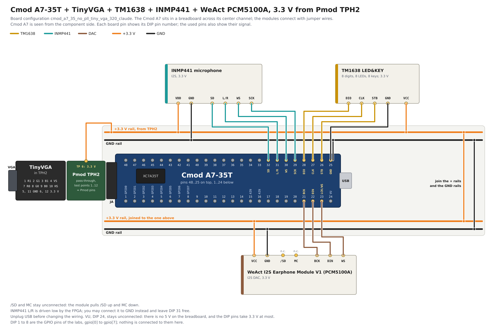
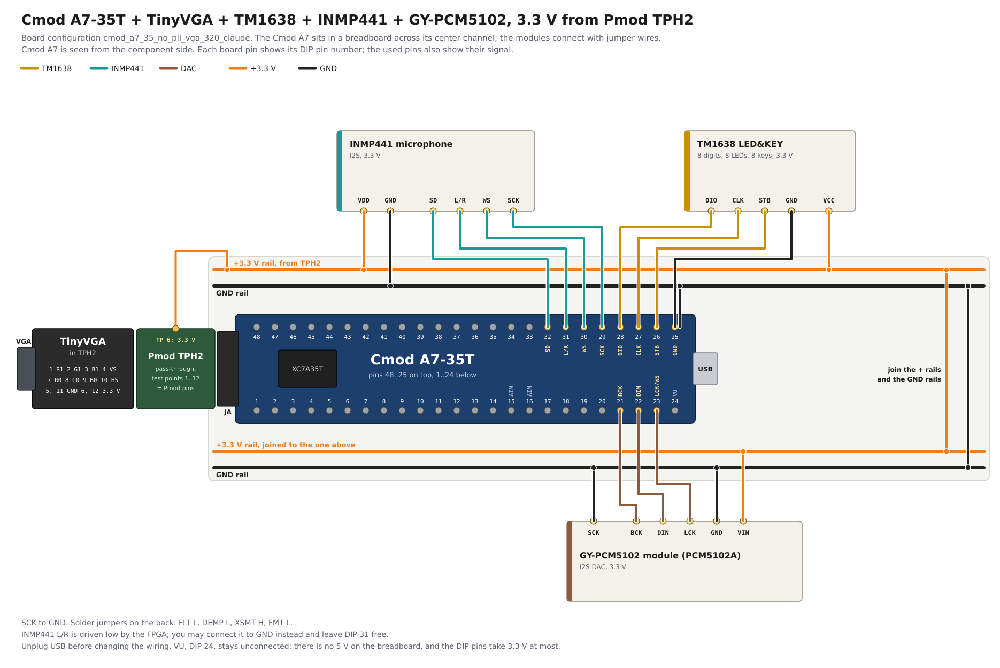
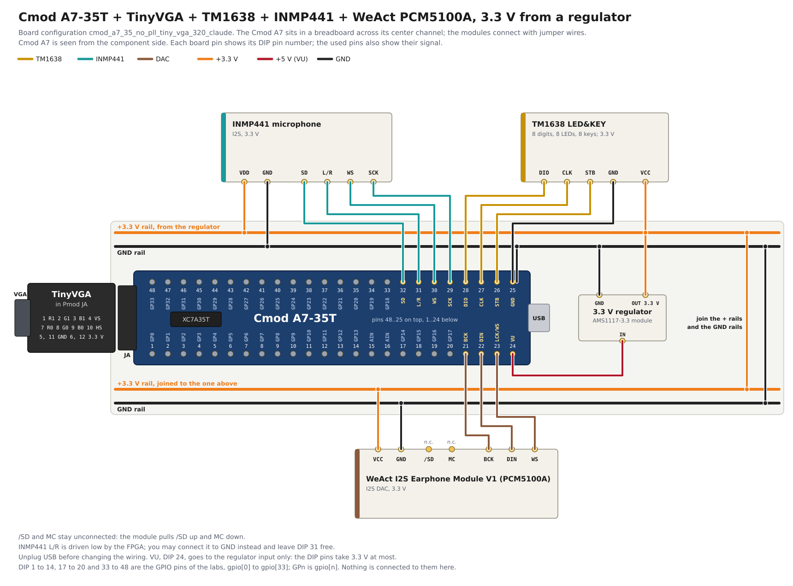
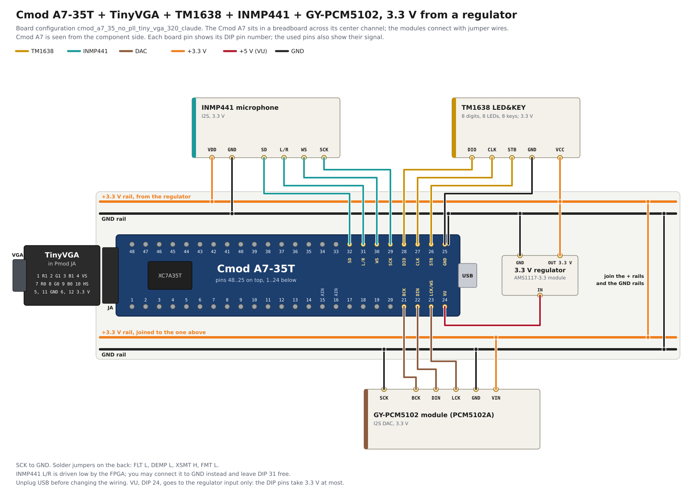

Generated by Claude Opus 5.5 (claude-opus-5-5) in Claude Code 2.1.325, effort level xhigh, using prompt from Yuri Panchul. See the verbatim prompt in the Appendix.
Cmod A7-35T without an MMCM: TinyVGA 320x480 from the 12 MHz oscillator
Board configuration cmod_a7_35_no_pll_tiny_vga_320_claude. Русская версия: README_ru.md.
This configuration uses the hardware and the wiring of cmod_a7_35_claude_tiny_vga_640: Digilent Cmod A7-35T on a breadboard with TinyVGA, TM1638, an INMP441 microphone and an I2S DAC. Only the FPGA design differs. It has no clock generator, no MMCM or PLL: the whole design runs on the 12 MHz oscillator of Cmod A7.
The standard 640x480 picture at 60 Hz needs a pixel clock of 25.175 MHz, which 12 MHz cannot give without a clock generator. Here the pixel clock is 12 MHz itself, so a line has half as many pixels: the labs draw on a screen of 320x480, and the monitor shows each pixel two pixels of 640 wide. The line rate is 30.0 kHz instead of 31.47 kHz, and some monitors refuse it.
Contents
- Which configuration to choose
- VGA timing
- What else changes at 12 MHz
- The hardware and the wiring
- Building and running the labs
- Status
- Files
- Appendix: the prompts
Which configuration to choose
The three configurations share the hardware, the pins and the wiring:
| cmod_a7_35_claude_tiny_vga_640 | cmod_a7_35_no_pll_tiny_vga_320_claude, this one | cmod_a7_35_no_pll_tiny_vga_304_claude | |
|---|---|---|---|
| Clock of the design | 50 MHz from an MMCM | 12 MHz, the oscillator | 12 MHz, the oscillator |
| Screen the labs draw on | 640x480 | 320x480 | 304x480 |
| Width of a pixel on the monitor, in pixels of 640 | 1 | 2 | 2.1: some 2, some 3 |
| Line rate | 31.25 kHz | 30.0 kHz | 31.50 kHz |
| Frame rate | 59.5 Hz | 57.1 Hz | 59.99 Hz |
| Monitors | Accept it | Some refuse 30 kHz | Accept it as 640x480 |
| Microphone sample rate | 48.8 kHz | 11.7 kHz | 11.7 kHz |
| DAC sample rate | 48.8 kHz | 46.9 kHz | 46.9 kHz |
Each of the three also comes without TM1638, with two buttons, two LEDs and no seven-segment display: cmod_a7_35_tiny_vga_640_no_tm1638_claude, cmod_a7_35_no_pll_tiny_vga_304_no_tm1638_claude, cmod_a7_35_no_pll_tiny_vga_320_no_tm1638_claude.
Choose this configuration to see a design without a clock generator with clean pixels of exactly two monitor pixels each. If your monitor shows no picture or reports the mode as out of range, use cmod_a7_35_no_pll_tiny_vga_304_claude, whose timing is close to the standard one, or cmod_a7_35_claude_tiny_vga_640.
VGA timing
peripherals/vga.sv takes its horizontal timing as parameters, so it is used unchanged. board_specific_top.sv passes the timing below; with CLK_MHZ and PIXEL_MHZ both 12, vga.sv moves to the next pixel on every clock. The vertical timing is the standard one.
| Part of a line | Standard 640x480, 25.175 MHz | This configuration, 12 MHz |
|---|---|---|
| Visible | 640 pixels, 25.42 µs | 320 clocks, 26.67 µs |
| Front porch | 16 pixels, 0.64 µs | 8 clocks, 0.67 µs |
| Sync pulse, low | 96 pixels, 3.81 µs | 48 clocks, 4.00 µs |
| Back porch | 48 pixels, 1.91 µs | 24 clocks, 2.00 µs |
| Whole line | 800 pixels, 31.78 µs, 31.47 kHz | 400 clocks, 33.33 µs, 30.00 kHz |
| Frame | 525 lines, 59.94 Hz | 525 lines, 57.14 Hz |
Each clock count of the right column is half the pixel count of the standard, so the monitor gets the signal of 640x480 run from a 24 MHz pixel clock, with every pixel repeated. Running 640x480 from 24 MHz is a known trick: many monitors show it. But 30 kHz is the lowest line rate that many monitors accept at all, and some refuse it. If the picture is there but shifted or blurred, use the automatic adjustment of the monitor.
The labs see screen_width = 320 and screen_height = 480. A lab that sizes its drawing from these parameters fills the screen, stretched twice in width: a circle looks like an ellipse. A lab that draws at fixed coordinates beyond x = 319 draws outside the screen.
A simulation of vga.sv with these parameters at 12 MHz measured a line of 400 clocks, a sync pulse of 48 clocks, 320 visible clocks a line, a frame of 525 lines with 480 visible, and a vertical sync pulse of 2 lines: 30.000 kHz and 57.143 Hz.
A full 640 pixel line at 12 MHz would need two pixels a clock, one on each edge of the clock, with the double data rate output registers of the FPGA. The labs of the repository give one pixel a clock, so this is not done here.
What else changes at 12 MHz
board_specific_top.sv is the one of cmod_a7_35_claude_tiny_vga_640 with these changes:
- No MMCM. The clock of the design is the oscillator input,
sysclk. Its pin, L17, is a clock-capable pin, and Vivado puts a global clock buffer on it. The constraint of the clock, 83.33 ns, is the one of Digilent in board_specific.xdc. - All modules get
clk_mhz = 12: the lab, TM1638, the microphone and the DAC. They derive their timing from it. - Reset. Without an MMCM there is no lock to wait for. The reset chain is all ones after configuration, so the design starts in reset and leaves it on the third clock edge. With TM1638, either Cmod button resets the design, as in cmod_a7_35_claude_tiny_vga_640.
- Microphone. The receiver makes SCK of 12 MHz / 16 = 0.75 MHz, within the 0.5 to 3.2 MHz of INMP441, and a sample rate of 12 MHz / 1024 = 11.7 kHz. That passes sound up to about 5.8 kHz: enough for the voice and for musical notes, while the labs that show a spectrum show a narrower one.
- DAC. The I2S output makes BCK of 3 MHz and a sample rate of 12 MHz / 256 = 46.9 kHz, with the same ratios as at 50 MHz.
- TM1638. Its driver divides
clk_mhzdown to its serial clock, so it works as before.
The hardware and the wiring
The parts, the 3.3 V source, the assembly and the wiring tables are those of cmod_a7_35_claude_tiny_vga_640; follow its instruction. The pins in short:
| Cmod A7 | Connect to |
|---|---|
| Pmod JA | TinyVGA |
| DIP 21, 22, 23 | DAC BCK, DIN, and LCK of GY-PCM5102 or WS of WeAct |
| DIP 24, VU | Variant A: nothing. Variant B: the regulator input only |
| DIP 25, 26, 27, 28 | GND rail and TM1638 GND, STB, CLK, DIO |
| DIP 29, 30, 31, 32 | INMP441 SCK, WS, L/R, SD |
TinyVGA. The VGA output is TinyVGA, the Pmod board of Leo Moser, in Pmod socket JA; its design files are in github.com/mole99/tiny-vga. The Tiny Tapeout store sells it assembled as Tiny VGA Pmod, €15.00 in November 2026. It can also be ordered assembled from JLCPCB with GERBER-tiny-vga.zip, BOM-tiny-vga.csv and CPL-tiny-vga.csv from pcb/jlcpcb/production_files/ of the repository; the steps are in Where to get TinyVGA of cmod_a7_35_claude_tiny_vga_640.
The drawings of this directory are those of cmod_a7_35_claude_tiny_vga_640 with the name of this configuration, for both DAC modules, WeAct I2S Earphone Module (PCM5100A) and GY-PCM5102 (PCM5102A).
Variant A: 3.3 V from Pmod TPH2


Variant B: 3.3 V from a regulator


Microphone, DAC and regulator plugged into the breadboard
breadboard_weact.png with the WeAct module and breadboard_gy_pcm5102.png with GY-PCM5102 show the microphone, the DAC and the regulator of variant B plugged straight into the breadboard. The vector versions of all drawings are the .svg files of the same names.


Building and running the labs
In a lab directory, choose the board once with ./06_choose_another_fpga_board.bash and pick cmod_a7_35_no_pll_tiny_vga_320_claude. Then build and load as for cmod_a7_35_claude_tiny_vga_640:
./03_synthesize_for_fpga.bash
./04_configure_fpga.bashThe scripts use Vivado for every board whose name starts with cmod_a7, so this configuration needs no change of the scripts. As with cmod_a7_35_claude_tiny_vga_640, the scripts load the FPGA, not the flash: the design is gone when USB is unplugged.
Status
Built with Vivado 2026.1, with no errors and no critical warnings, and with all timing met at 12 MHz, a clock period of 83.3 ns:
| Lab | Configuration | LUTs | Registers | Worst setup slack |
|---|---|---|---|---|
labs/2_graphics/2_3_color_stripes | VGA, TM1638, microphone, DAC | 117 | 99 | 76.8 ns |
labs/3_music/3_0_oscilloscope | VGA, TM1638, microphone, DAC | 230 | 190 | 75.5 ns |
labs/3_music/3_10_spectrum_analyzer | VGA, TM1638, microphone, DAC | 2412 | 1528 | 64.2 ns |
labs/3_music/3_10_spectrum_analyzer | VGA, microphone, DAC, no TM1638 | 2340 | 1471 | 68.1 ns |
The builds read the sources the way the scripts do, with peripherals/lab_specific_board_config.svh, which turns on TM1638, VGA, the microphone and the DAC; the last line used a configuration file without TM1638. As the instruction of cmod_a7_35_claude_tiny_vga_640 explains, the Vivado script of the repository does not read the lab_specific_board_config.svh of a lab. Vivado gives the design rule warning CFGBVS-1, as for cmod_a7_35_claude_tiny_vga_640; it does not stop the bitstream. In every build Vivado used one global clock buffer for the 12 MHz clock and no MMCM or PLL.
Not yet tried on a real board or a monitor. Whether a given monitor accepts the 30 kHz line is the open question of this configuration.
Files
| File | What it is |
|---|---|
| board_specific.xdc | The same as in cmod_a7_35_claude_tiny_vga_640: Cmod-A7-Master.xdc of Digilent, only the used lines uncommented |
| board_specific_top.sv | Pin mapping, reset, the VGA timing and the instances of the lab, VGA, TM1638, microphone and DAC modules, all at 12 MHz |
| board_specific.tcl | FPGA part for Vivado |
wiring_*.svg, wiring_*.png | The wiring diagrams, for both DAC modules and both 3.3 V sources |
breadboard_*.svg, breadboard_*.png | The breadboard layouts, for both DAC modules |
| README.md, README.html | This instruction in English |
| README_ru.md, README_ru.html | The same in Russian |
The drawings come from the generators of cmod_a7_35_claude_tiny_vga_640, run with the name of this configuration:
cd ../cmod_a7_35_claude_tiny_vga_640
python3 generate_wiring_diagram.py cmod_a7_35_no_pll_tiny_vga_320_claude
python3 generate_breadboard_diagram.py cmod_a7_35_no_pll_tiny_vga_320_claude
cd ../cmod_a7_35_no_pll_tiny_vga_320_claude
for f in wiring_*.svg breadboard_*.svg
do
# ${f%.svg} is the file name without the .svg suffix
inkscape "$f" --export-type=png --export-dpi=96 \
--export-background=white --export-filename="${f%.svg}.png"
doneAppendix: the prompts
The hardware and the wiring come from the prompts in the appendix of cmod_a7_35_claude_tiny_vga_640. This configuration comes from the following prompts, sent by Yuri Panchul in the same Claude Code session on 16 and 17 November 2026, verbatim. They are all the prompts of the session from the first one about this configuration on, the requests to commit and push included, and the prompts that follow and concern this configuration are added here too. The prompts name the configurations as they were called then: the suffix _claude came at 00:43, tiny_ at 09:47 and tiny_vga_640 at 10:20 on 17 November. The times are Pacific time (UTC−8).
22:10, a question; the answer proposed two timings, A for this configuration and B for cmod_a7_35_no_pll_tiny_vga_304_claude:
Is it possible to run VGA on 12 MHz without PLL?22:23:
create two other configurations called cmod_a7_35_no_pll_vga_320 and cmod_a7_35_no_pll_304 and implement A and B. Document everything inside directories.22:25, sent while the answer to the previous one was in progress:
also make pictures with weact in addition to gy23:04:
rename cmod_a7_35_no_pll_304 to cmod_a7_35_no_pll_vga_30423:17:
keep README.csv with CR-LF for now; I will fix it later; first commint and push, then create 3 new configurations that do not use tm1638, just have 2 buttons, 2 leds and no 7-segement display: cmod_a7_35_no_tm1638
cmod_a7_35_no_pll_vga_304_no_tm1638
cmod_a7_35_no_pll_vga_320_no_tm163823:53:
commit and push00:29 on 17 November, about the suffixes _vga_320, _vga_304 and _no_pll that Yuri Panchul had added to the board menu in scripts/steps/00_setup.source_bash, so that the menu lists the configurations without an MMCM under cmod_a7_35:
check the changes I did manually. Tell why they are needed00:37 on 17 November; the catalog boards/README.csv went back to one line for the physical board, cmod_a7_35:
yes, fix the catalog, then commit and push00:43 on 17 November:
Add to all your cmod_a7 configurations suffix _claude. Update all the relevant files.00:56 on 17 November:
commit and push09:47 on 17 November; it added tiny_ before vga in the names of the configurations without an MMCM and the paragraph on TinyVGA in The hardware and the wiring:
convert all mentions to vga in configuration names and the related texts to tiny_vga. Specifically mention TinyVGA in documentation, repository https://github.com/mole99/tiny-vga and where to buy it retail or order from JLCPCB. Make sure to add this and other previous and follow-up related prompt as appendices to the instructions you generate.10:20 on 17 November:
commit and push; then rename cmod_a7_35_claude to cmod_a7_35_claude_tiny_vga_640 and cmod_a7_35_no_tm1638_claude into cmod_a7_35_tiny_vga_640_no_tm1638_claude19:00 on 17 November:
commit and push19:47 on 17 November:
commit and push20:29 on 17 November; it produced a report that compares these configurations with those of Codex, claude_cmod_a7_compare_1.html:
review your compatitor's cmod_a7 board implementations, search bor bugs and good ideas to adopt, make a competitive report in a new html file.20:35 on 18 November, the answer to whether the TM1638 column of the catalog row cmod_a7_35 should say "always" or "either"; it now says "either":
yes, should say either20:43 on 18 November:
commit and push20:45 on 18 November; it produced a Russian version of that report, claude_cmod_a7_compare_1_ru.html:
generate a Russian version of the competitive report21:05 on 18 November; it added both reports, linked above, to misc/ai_sessions/20261118_cmod_a7_support/claude:
Add your reports to basics-graphics-music/misc/ai_sessions/20261118_cmod_a7_support/claude21:58 on 18 November:
commit and push